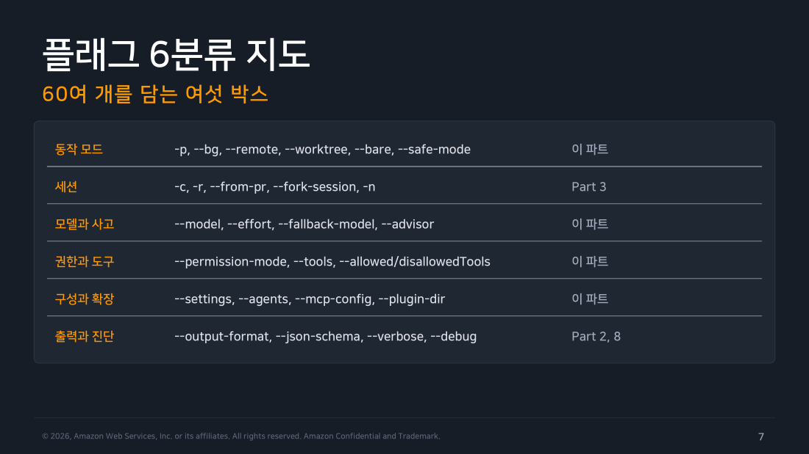
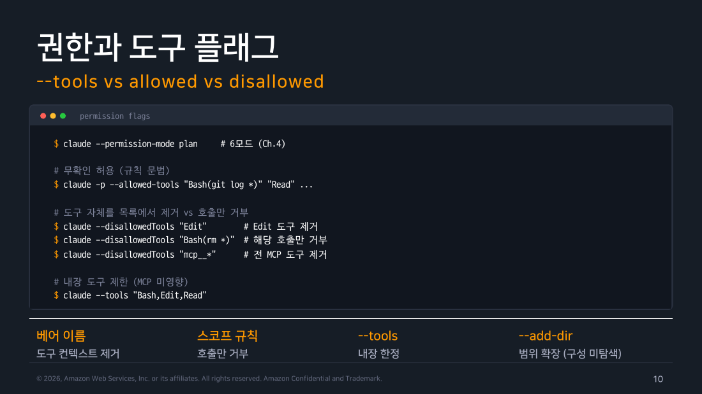
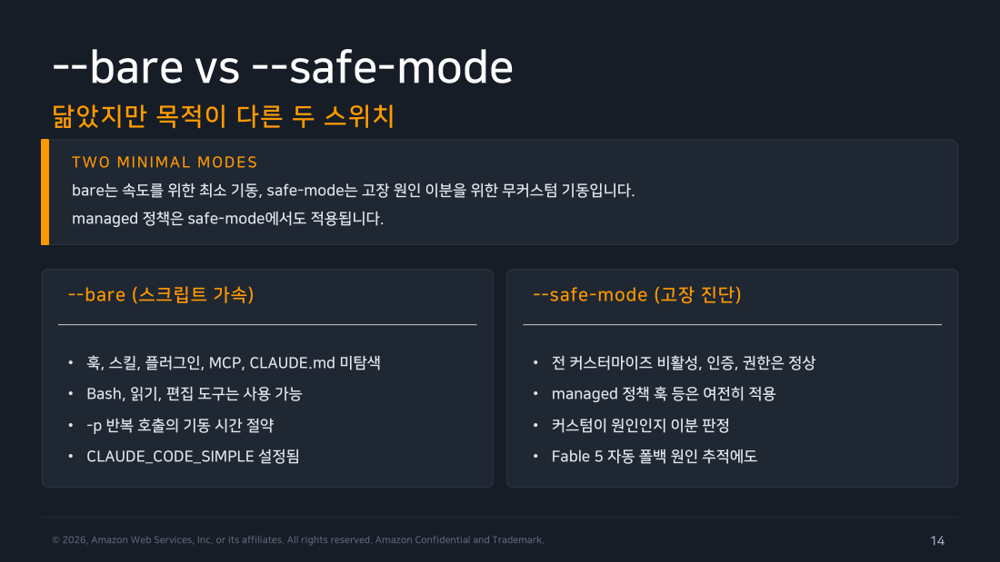

Part 1 — claude 명령과 플래그¶
한 줄 요약¶
지금 설치된 버전에서 어떤 플래그가 실제로 동작하는지는 교재나 기억이 아니라 그 자리에서 친 --help가 정합니다. 자동화는 이 실측 결과를 기준으로 짭니다.
왜 알아야 하나¶
어제의 플래그를 오늘의 CI에 넣으면 조용히 실패하거나, 더 나쁘게는 전혀 다른 권한으로 실행될 수 있습니다. 교재의 2026년 7월 설명을 출발점으로 삼되, 실행 당일 그 자리에서 --help를 다시 쳐서 지금 이 버전이 실제로 뭘 지원하는지부터 확인해야 하는 이유입니다.
1. 명령은 세 층으로 읽는다¶
터미널에서 claude를 치기 직전에 먼저 정해야 하는 게 하나 있습니다. 지금 답만 받고 끝낼 것인가, 아니면 세션을 열어두고 계속 주고받을 것인가. 이 대답에 따라 명령의 모양 자체가 달라집니다.
"이 함수가 왜 느린지 봐줘"처럼 답을 보고 되물을 게 뻔한 작업이면 인자 없이 claude만 칩니다. 대화형 세션이 시작되고 맥락이 계속 쌓입니다. 반대로 커밋 메시지 한 줄을 뽑아 그대로 다음 명령에 넘길 생각이라면 -p(--print)를 붙입니다. 답을 출력하고 끝나는 비대화 실행이라 셸 스크립트가 기대하는 모양은 언제나 이쪽입니다.
여기에 층이 하나 더 있습니다. mcp, auth, agents, logs, attach 같은 서브커맨드는 애초에 질문을 던지는 자리가 아니라 세션 주변의 운영 표면입니다. claude mcp add ...는 Claude에게 던지는 질문이 아닙니다. 설정을 바꾸는 명령입니다.
이 세 층을 먼저 갈라두는 게 중요합니다. 그래야 프롬프트·옵션·서브커맨드를 한 문장에 섞지 않습니다.
flowchart TD
A["claude"] --> B["대화형 세션"]
A --> C["-p / --print\n단발 실행"]
A --> D["서브커맨드\nauth · mcp · logs · attach"]
style A fill:#e3f2fd,stroke:#1976d2,color:#000
style B fill:#e8f5e9,stroke:#388e3c,color:#000
style C fill:#fff3e0,stroke:#ef6c00,color:#000
style D fill:#f3e5f5,stroke:#7b1fa2,color:#000
▲ 교재 슬라이드 07 — 플래그 6분류 지도
2. 플래그는 의도로 묶는다¶
claude --help를 처음 열면 플래그가 화면을 가득 채웁니다. 전부 외울 필요는 없고 "내가 지금 무엇을 바꾸려는 건가"를 기준으로 묶어두면 필요한 순간에 찾아갈 수 있습니다. 실측 도움말에서는 출력·세션·권한·컨텍스트·운영·문제해결 여섯 갈래로 나누어 읽는 편이 안전했습니다.
- 출력의 모양을 바꾸고 싶다 —
--output-format,--json-schema,--input-format. 사람이 읽을 텍스트로 받을지, 다음 단계가 파싱할 JSON으로 받을지를 정하는 자리입니다. - 이전 대화를 이어가고 싶다 —
-c,-r,--fork-session,--session-id. 세션을 다시 불러오거나 가지를 쳐서 갈라놓습니다. - 도구와 권한을 좁히고 싶다 —
--tools,--allowed-tools,--disallowed-tools,--permission-mode. 넷이 서로 겹쳐 쌓이므로 바로 아래에서 따로 봅니다. - 실행 환경 자체를 바꾸고 싶다 —
--add-dir,--settings,--mcp-config,--debug,--safe-mode.
권한과 도구 쪽 넷은 구체적인 상황에서 출발하면 빠릅니다. 자동화 스크립트가 파일을 지워버리는 사고를 막고 싶어서 --disallowed-tools에 Bash(rm *)를 걸었다고 합시다. 이러면 rm -rf build는 막히지만 npm run build는 그대로 돌아갑니다. 반면 지정자 없이 Bash라고만 적으면 셸 도구 자체가 통째로 사라져서 ls 한 줄도 못 돌립니다. 도구 이름만 적으면 그 도구 전체가 사라지고, Bash(rm *)처럼 범위를 좁혀 적으면 도구는 살아 있고 해당 패턴만 막힙니다.
그런데 이 규칙들 바깥에 한 겹이 더 있습니다. 공식 문서의 "Tool Access Precedence" 절이 이 우선순위를 명시합니다. --tools가 가장 바깥쪽 울타리로, 여기 없는 도구는 아예 존재하지 않는 것처럼 취급됩니다. 그래서 --tools 목록에 Bash를 넣지 않은 채로 --allowed-tools에 Bash 규칙을 아무리 정성껏 써 봐야 소용이 없습니다. 울타리 밖의 도구라 처음부터 없는 것과 같기 때문입니다.
그 울타리 안에서 나머지 둘이 규칙을 더합니다. --allowed-tools는 확인 없이 실행할 규칙을, --disallowed-tools는 거부할 규칙을 추가합니다. 순서로 정리하면 먼저 --tools로 무대에 올릴 도구를 정하고, 그 안에서 allow와 deny로 세부 규칙을 그리는 두 단계입니다.

▲ 교재 슬라이드 10 — 권한과 도구 플래그
3. bare와 safe mode는 같은 스위치가 아니다¶
이름만 보면 둘 다 가볍고 안전하게 돌리는 모드 같아서 헷갈립니다. 고를 때는 이름 대신 지금 내 목적이 무엇인지를 먼저 묻는 게 빠릅니다.
- "설정 자체가 고장의 원인인지 가르고 싶다" →
--safe-mode - "CI에서 최소한만 켜고 매번 똑같이 돌리고 싶다" →
--bare
--safe-mode는 문제 해결용입니다. 훅이 이상하게 걸리거나 플러그인 하나가 세션을 망가뜨리는 것 같을 때 내가 얹은 것들만 걷어내고 "그래도 재현되는가"를 봅니다. 사용자 정의(스킬·플러그인·hooks·MCP·사용자 명령 등)를 끄되 인증·모델 선택·내장 도구·권한은 계속 작동하는 모드라서 평소와 거의 같은 환경에서 변수 하나만 제거하는 셈입니다.
--bare는 성격이 다릅니다. 실측 설명은 hooks·LSP·플러그인 동기화·자동 메모리·CLAUDE.md 자동 탐색 등을 건너뛰는 minimal mode라고 말합니다. 특히 눈여겨볼 건 인증 쪽입니다. OAuth와 keychain을 읽지 않고 — 내 로컬 머신에 로그인해 둔 자격증명에 기대지 않고 — 인증은 ANTHROPIC_API_KEY 또는 settings의 apiKeyHelper만 사용한다고 명시합니다. 로컬에서만 통하고 CI에서는 조용히 실패하는 의존성이 여기서 걸러집니다.
따라서 성능과 반복 호출의 단순화가 목적이면 bare를, “내 설정이 고장의 원인인가?”를 가르는 목적이면 safe mode를 고릅니다. 여기서 오해하기 쉬운 게 하나 있습니다. bare가 safe mode보다 더 안전하다는 뜻은 아닙니다. 이름이 주는 인상과 달리 둘은 안전 등급의 상하 관계가 아니라 목적이 다른 별개의 스위치입니다.
공식 문서는 --bare의 도구 범위를 Bash와 파일 읽기·편집으로 한정하고 스크립트·SDK 호출에 권장하는 모드이며 향후 -p의 기본값이 될 예정이라고 못 박습니다 — 지금 습관을 들여 둘 가치가 있다는 뜻입니다.

▲ 교재 슬라이드 14 — --bare vs --safe-mode
현장 메모
CI에서 --bare를 쓰면 사람의 로컬 설정에 기대지 않게 됩니다. 대신 인증과 필요한 컨텍스트를 명시해야 하므로, 숨은 의존성을 드러내는 장점이 있습니다.
직접 해보기¶
다음은 2026-08-29에 실제 실행한 원본 일부입니다. --help는 교재 목록과 비교할 때 기준이 됐습니다.
$ claude --version
2.1.251 (Claude Code)
$ claude mcp --help
Usage: claude mcp [options] [command]
Configure and manage MCP servers
Commands:
add [options] <name> <commandOrUrl> [args...]
add-from-claude-desktop [options]
add-json [options] <name> <json>
get <name>
list
login [options] <name>
logout <name>
remove [options] <name>
reset-project-choices
serve [options]
교재 슬라이드 7~16과 실측을 비교하면 --bare, --safe-mode, --from-pr는 이름·동작 모두 그대로입니다. 다만 --remote는 이번 도움말에 보이지 않았는데, 없어진 게 아니라 --cloud의 폐기된(deprecated) 숨은 별칭이었습니다 — 실제로 claude --remote를 쳐 보면 파서가 이를 받아들이고 "--cloud는 대화형 터미널이 필요하다"는 오류를 냅니다. 교재가 이 슬라이드에서 함께 소개하는 "웹으로 위임 후 되찾기" 표면은 오히려 --remote-control(별칭 --rc)이라는 별개의 명령입니다. 즉 --remote → --remote-control 개명은 애초에 없었습니다. --remote는 --cloud의 그림자이고 --remote-control은 처음부터 다른 기능입니다.
실측에서 달랐던 점
교재의 축약 표현을 그대로 스크립트에 옮기지 않았습니다. "이름이 바뀌었겠지"라고 짐작하지 말고 짧은 플래그가 안 보이면 먼저 그 플래그를 직접 쳐서 어떤 오류·안내가 나오는지 확인하는 편이 안전합니다.
흔한 오해 바로잡기¶
"-p면 권한과 설정이 자동으로 안전해진다" — 아닙니다. print 모드는 작업공간 신뢰 대화상자를 건너뜁니다. 신뢰할 수 있는 디렉터리에서만 실행하고 도구·권한을 명시합니다.
정리¶
CLI는 옵션을 많이 아는 사람보다 옵션의 책임을 분리하는 사람이 덜 실수합니다. 먼저 실행 형태를 고르고, 다음으로 세션과 도구 범위를 정하고, 마지막으로 출력 형식을 미리 정해 둔 대로 고정합니다.
이후 파트의 모든 명령은 이 순서를 따릅니다. 교재의 설명은 방향을 주고 실행 당일의 도움말은 실제 배포 기준을 줍니다.
출처¶
- Claude Code Deep Dive Workshop — Chapter 5 / Part 1: CLI Reference (슬라이드 4~16)
- 공식 문서: CLI reference